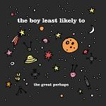
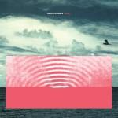
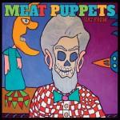
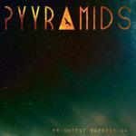
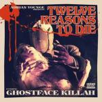

Music Reviews
-

The Boy Least Likely To The Great Perhaps
The Great Perhaps oozes cuteness, but does it get a little too cute?
John Grimley wonders what they're least likely to do... -
Pharaohs Replicant Moods
There's something disingenuous about Pharaohs' kitschy throwbacks to outdated analogue equipment, but something very honest about their love of early house music - and the result is a satisfying summer album, regardless of how "dated" it sounds.
Stephen Wragg reviews... -

Generationals Heza
Generationals are back with their 3rd LP, and with Heza, they've refined their science and delivered a delightfully catchy marriage of guitar and electronics.
Carl Purvis spends an hour with a smile on his face... -

Meat Puppets Rat Farm
Meat Puppets were hardcore punks in another time, but they're plenty satisfied to continue the convivial sounds of more recent years.
Forrest Cardamenis reviews... -

Pyyramids Brightest Darkest Day
The Los Angeles duo bridge a successful combination of brooding heaviness and synthpop.
Gabbie Nirenburg reviews... -

Ghostface Killah Twelve Reasons to Die
The workaholic Wu member returns, accompanied by superb instrumentation courtesy of Andre Young.
Enter the Wu..... -

will.i.am #willpower
You've got a VIP pass to the megastar producer's latest, but does he manage to get the party started?
Juan Edgardo Rodríguez did it to get mad hits... -
Yeah Yeah Yeahs Mosquito
I know what you're thinking. I agree, that album artwork really is terrible. What were they thinking? Anyway, here's the follow-up to It's Blitz.
James McKenna reviews... -
The Thermals Desperate Ground
The Thermals promised their latest record would be "loud, fast, incredibly scary and undeniably catchy," but how well did the band own up to their promise?
Peter Quinton stalks his prey and pounces on the latest Thermals album... -
Jenny Hval Innocence is Kinky
The Norwegian singer-songwriter delivers a dense, complex, yet immediately arresting record about feminist politics, the expressive power of music, and how the internet shapes subjectivity.
That night, Stephen Wragg writes a record review on his computer...